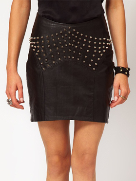

How to Style a Leather Jacket: Men's Fashion Tips
By: Penelope
Choose the Right Fit
A leather jacket is the ultimate statement piece for any man's wardrobe, but finding the perfect fit can be a daunting task. With so many styles and sizes available, it can be challenging to determine which leather jacket will flatter your body type and personal style. The secret to achieving a stylish and comfortable fit lies in selecting the right size and style for your body type.
The first step in choosing the right fit for your leather jacket is determining your body type. Men typically fall into one of four categories: lean, athletic, muscular, or heavyset. Each type requires a different jacket style and fit to achieve the desired look.
A lean body type looks great in a classic bomber or motorcycle jacket that fits closely to the body but doesn't cling. If you have a solid athletic build, you can rock bolder, more oversized jacket styles that are not too tight. On the other hand, individuals who fall under the muscular category should opt for a bomber or cafe racer jacket that features ample shoulder room and is fitted to the waist. Lastly, a heavyset body type would look great in a leather jacket with horizontal panels, especially in the shoulder area, to create the appearance of a more slender frame.
When it comes to the perfect fit, consider the length of the jacket. A leather jacket should fall no lower than the hips and no higher than the waist for the most flattering and comfortable fit. Additionally, ensure that the sleeves are the appropriate length and not too tight or too loose.
In conclusion, choosing the right fit for your leather jacket is crucial in achieving the perfect look. By considering your body type and opting for the appropriate style and length, you can elevate your style game and make a statement with confidence.
ad space
Pair with Basics
A leather jacket is an essential in any man's wardrobe. It's a timeless piece that can be dressed up or down, and it never goes out of style. However, knowing how to style a leather jacket can be a little tricky. That's where we come in. In this article, we'll be sharing some of the best men's fashion tips to help you rock your leather jacket with confidence.
Pair with Basics
One of the simplest ways to style a leather jacket is to pair it with basics. This means wearing a plain t-shirt or sweater, straight-leg jeans, and simple sneakers or boots. By keeping it simple, you allow the leather jacket to be the star of the show. This look is perfect for a casual night out with friends or a laid-back weekend.
But just because you're keeping it simple doesn't mean you can't have a little fun with it. Try experimenting with different colors and textures for your basics. A fitted black t-shirt paired with dark wash jeans and brown leather boots is a classic look that never fails. Alternatively, a white t-shirt with distressed jeans and black Converse sneakers can give off a more edgy and rebellious vibe.
When it comes to accessories, less is more. A simple watch or bracelet can add a touch of sophistication without overwhelming the look. And unless you're going for a full-on biker look, skip the chains and spikes.
In conclusion, pairing your leather jacket with basics is a fool-proof way to look stylish and put-together. By keeping it simple and sticking to classic pieces, you can let your leather jacket do the talking. So next time you're wondering how to style your leather jacket, remember to keep it simple and let your personal style shine through.
ad space
Choose the Right Color
When it comes to styling a leather jacket, one of the most important things to consider is the color. While black may be the classic choice, there are a myriad of other options that can help you stand out from the crowd and express your unique sense of style. In this guide, we'll go over the different colors of leather jackets and how to choose the one that best suits your individual look.
Firstly, let's talk about black. As we mentioned before, this is the most classic leather jacket color, and for good reason. It goes with just about anything and adds an air of sophistication to your outfit. However, if you're looking for something a bit more unique, consider a brown leather jacket. The warm, earthy tones of brown can give your look a more relaxed, casual vibe, and work particularly well during the fall season.
For those who want to make a statement, there are plenty of bold colors to choose from. A red or burgundy leather jacket can add a pop of color to your outfit, while a green or blue jacket can give off a retro, vintage vibe. However, keep in mind that these colors may not be as versatile as black or brown, and may not pair well with certain outfits.
No matter what color leather jacket you choose, it's important to make sure it fits well and complements the rest of your outfit. Don't be afraid to experiment with different colors and combinations until you find the perfect look. Follow these tips, and you'll be sure to turn heads with your stylish leather jacket.
ad space
Accessorize Wisely
Leather jackets are a staple for men's fashion, but it can be hard to know how to style them. A good leather jacket can last for years and bring any outfit to life, but accessorizing it can be a bit tricky. Accessorizing properly is one of the most important parts of styling your leather jacket, and it can completely transform your look.
Here are some tips to help you accessorize your leather jacket wisely:
1. Choose the right belt
Your belt should complement your leather jacket, not clash with it. Go for a slim or braided belt that matches the color of your jacket for a sleek and cohesive look. If you're wearing a black leather jacket, a black leather belt will do the trick. If you're wearing a brown leather jacket, a brown leather belt will keep your outfit unified.
2. Layer with scarves
Scarves are a great accessory to add to your leather jacket outfit, especially during the colder months. Adding a scarf can add texture, color, or pattern to your outfit. For a classic look, opt for a wool scarf in a neutral color like navy, gray, or brown. A pattern or color can also help to make the outfit stand out.
3. Find the right shoes
Shoes can make or break an outfit, and that's especially true when it comes to leather jackets. Black leather jackets can be paired well with black boots, while brown jackets will go well with brown boots. If you're going for a more casual look, try wearing clean sneakers or plimsolls.
4. Experiment with hats
Hats can add an extra touch of style to your leather jacket outfit. Beanies are a great choice that can add some edge to your look during the colder months, while a fedora or flat cap can elevate your look for a more sophisticated vibe.
Accessories can make your leather jacket look even better, so make sure to accessorize it in the right way. Follow these tips when it comes to styling your leather jacket to ensure you always look fashionable and charming. Remember, accessorizing wisely will help you enhance your look and stand out from the crowd.
ad space
Take Care of Your Jacket
A leather jacket is a timeless piece that every man should have in their wardrobe. Not only does it add a stylish and rugged look to your outfit, but it also provides a layer of warmth during chillier days. However, owning a leather jacket is a big investment, and it's essential to take proper care of it to ensure that it lasts a long time.
A well-maintained leather jacket can last for years or even decades, as opposed to a poorly maintained one that may only last for a few months. So, whether you are a first-time leather jacket owner or a seasoned collector, it's important to know how to take care of your jacket to keep it in great condition.
To begin with, always remember to protect your jacket from water and dry it immediately if it gets wet. Leather is a natural material, and it can easily absorb water, which causes it to become brittle and even tear.
Moreover, avoid exposing your jacket to extreme heat or direct sunlight since it can fade and damage the leather. Additionally, investing in leather care products such as leather conditioner, wax or spray can help to maintain the appearance, shine, and flexibility of your jacket.
Lastly, it's essential to follow the cleaning instructions on the care tag of your jacket. Each leather jacket is different and requires a unique cleaning process. Some may require professional cleaning, while others may need simple routine cleaning.
By taking care of your leather jacket, you can ensure that it remains in great shape for years to come. Proper care will also help maintain its elegant look, allowing you to always look stylish, regardless of the occasion. So, keep these tips in mind, and you'll be sure to enjoy your jacket for a long time.
ad space
Conclusion
After taking you through various aspects of styling a leather jacket, it’s time to wrap things up. Hopefully, you’ve found inspiration and picked up some useful tips that will help you elevate your fashion game.
Firstly, investing in a quality leather jacket is key. It’s a versatile piece of clothing that can be dressed up or down and can be worn year-round. Secondly, pairing a leather jacket with a white t-shirt and slim-fit jeans is a timeless look that’s both effortless and stylish. Don’t be afraid to experiment with different colors and textures to mix things up.
Accessories such as scarves, watches, and boots can make all the difference when styling a leather jacket. They can add personality and character to an outfit and take it to the next level.
Remember to take care of your leather jacket with the right products and treatments so that it lasts a long time. Finally, confidence is key when pulling off any fashion look, so wear your leather jacket with pride and swagger.
We hope our tips have been helpful and that you’re now ready to embark on your leather jacket styling journey. Go forth and experiment with different looks, and don't forget to share your success stories with us!
ad space